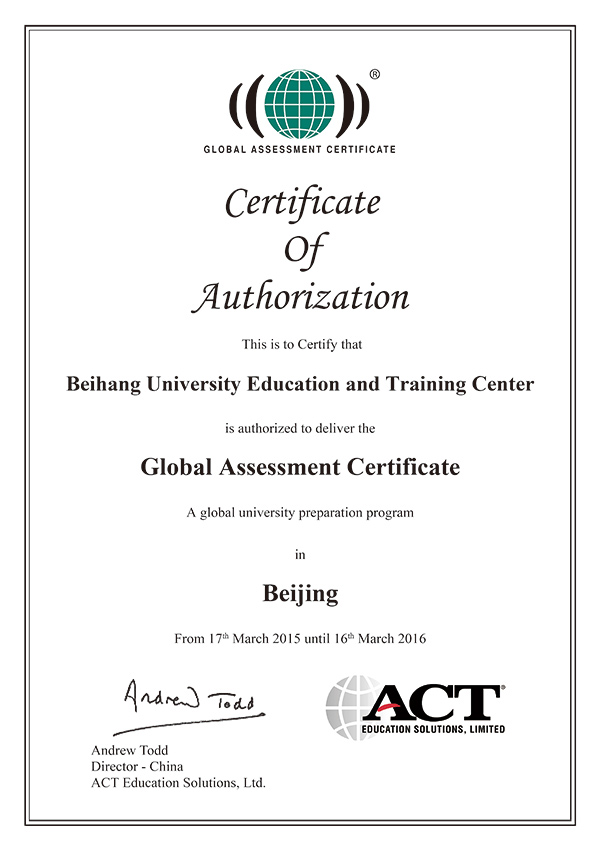

GAC全球预科课程全称：Global Assessment Certificate™ (GAC) Program，GAC是全球最受广泛认可的大学预备课程，该课程专为英语非母语的学生所设计，是ACT Education Solutions（ACT全资子公司）的教育产品。是由美国大学入学考试委员会权威开设的唯一涵盖美国高考ACT的国际预科课程。GAC专注于培养学生进入海外大学读书并成功完成本科学业所必备的学术知识、能力与自信。
所有合格完成GAC-ACT课程的学生都可以申请全球共约3500所大学，他们包括：加拿大、澳大利亚、英国、新西兰、爱尔兰等英语国家的大部分大学；所有美国大学：包括哈佛、耶鲁等顶尖常青藤大学联盟大学在内的全美3300余所大学都将ACT成绩作为大学的入学标准以及奖学金发放标准
2.最适合学生的国际预科课程GAC毕业生除了可以在本中心参加ACT考试之外，还有147所直通大学，最多能获得39个学分（根据个人成绩和申请学校情况各有不同，39个学分基本相当于大学一年的学分）。
3. 更有利于学生发展的国际预科课程GAC的课程设置立足于培养学生独立完成国外大学学习所需的知识和技能，让学生无论从语言，知识结构，还是学习习惯上，消除适应问题，更快取得成功。
4.最有保障的国际预科课程授课地点为北京航空航天大学校学院路校区，北航提供的所有教学设施，为学生提供一流的学习条件。
第一级：由六个主科目构成，包括学术英语和计算机应用技巧，数学和数学专有词汇入门，学习技巧和交流技巧。
| 课程名称 | 小时数 | ||
|---|---|---|---|
| 课堂 | 自习 | 总数 | |
| 学术英语 I：听力和表达能力 | 40 | 20 | 60 |
| 学术英语 I：阅读和写作能力 | 40 | 20 | 60 |
| 独立学习技能 | 40 | 20 | 60 |
| 数学 I：基础入门 | 40 | 20 | 60 |
| 计算机 I：学术学习的计算机入门 | 40 | 20 | 60 |
| 商务、科学和社会科学 I：沟通技能 | 40 | 20 | 60 |
总小时数： 240 小时课堂学习和120小时独立学习
第二级：由六个主科目构成，对第一级介绍的概念、技巧和知识掌握度加以进一步延伸。两个英语科目为必选课，侧重于大学学习所要求达到的中级水平学术技能。这一级别还包括其它五门课程，计算机技能将会进一步介绍数据库和电子表格的基本知识。数学包括统计学。学生还将在这一级学习商务、科学和社会科学知识。学生选修五门课中的四门。此外，作为选修课，学生可以根据自己所选留学国家的不同选修雅思或者托福考试课程
| 课程名称 | 小时数 | ||
|---|---|---|---|
| 课堂 | 自习 | 总数 | |
| 学术英语 II：听力和表达能力 | 40 | 20 | 60 |
| 学术英语 II：阅读和写作能力 | 40 | 20 | 60 |
| 以下五门中选四门： | |||
| 数学 II：概率、统计、财务 | 40 | 20 | 60 |
| 计算机 II：数据管理 | 40 | 20 | 60 |
| 商务 II：商务学习 | 40 | 20 | 60 |
| 科学 II：科学原理 | 40 | 20 | 60 |
| 社会科学 II：社会身份与人际交往 | 40 | 20 | 60 |
| 选修课： | |||
| 雅思应试技巧 | 40 | 20 | 60 |
| 托福应试技巧 | 40 | 20 | 60 |
总小时数：240 小时课堂学习和120小时独立学习，外加40小时雅思或托福应试技巧选修课。
第三级：这一级提供更多深度学习和为将来大学的学习做准备。这些课程旨在让学生在大学学习前获得很高的学术知识掌握度。这一级别分六个科目，包括两个英语核心科目以及四个其它科目。学生通常继续学习二级时所选择的科目。选修单元包括ACT考试准备单元以及一个数学选修单元。
| 课程名称 | 小时数 | ||
|---|---|---|---|
| 课堂 | 自习 | 总数 | |
| 学术英语III：听力和表达能力 | 40 | 20 | 60 |
| 学术英语III：阅读和写作能力 | 40 | 20 | 60 |
| 以下五门中选四门： | |||
| 数学 III：微积分和高等应用 | 40 | 20 | 60 |
| 计算机 III：数据管理 | 40 | 20 | 60 |
| 商务 III：商务学习 | 40 | 20 | 60 |
| 科学 III：科学原理 | 40 | 20 | 60 |
| 社会科学 III：社会身份与人际交往 | 40 | 20 | 60 |
| 选修课： | |||
| ACT应试技巧 | 40 | 20 | 60 |
| 离散数学 | 40 | 20 | 60 |
总小时数：240 小时课堂学习和120小时独立学习，外加40小时ACT应试技巧。如果选修离散数学外加40小时
GAC直通大学名单：见EXCEL表格
招生对象：全日制：高二、高三或同等学历学生，高中各科目期末成绩、会考成绩合格，具备一定英语基础
成绩要求：第一级：雅思5.0，或托福IBT61，或入学测试成绩60（满分100）
第二级：雅思6.0，或托福IBT70，或入学测试成绩75（满分100）
电话：010-82316229、010-58643888、010-58641999
地址：北京市海淀区学院路35号世宁大厦105